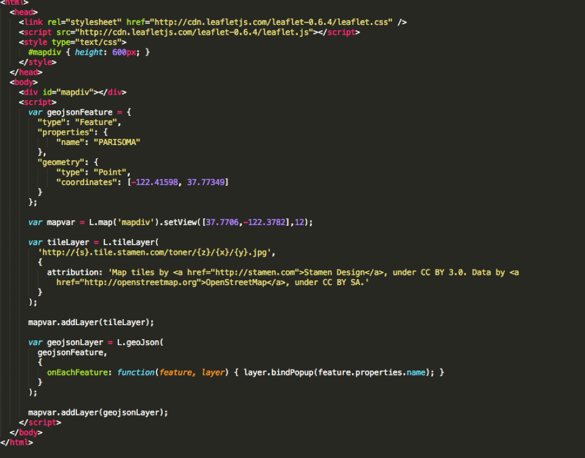

Anatomy of a Web Map
By Alan McConchie and Beth Schechter
Modified for Maptime Sacramento by
Kari Mah You can follow along here:
goo.gl/Mnp2wP. Links are in blue boxes,
green is just emphasis.
basic principles of web mapping (and some history)
plus exceptions!
100% open source Google-free stack
anatomy?
What is a web map?
 skipping mobile devices
skipping mobile devicesHow did web maps come to be?

1996: Mapquest!
2005: And then there was Google Maps.
But what was the revolution?
The
tile. 
All tiles
=
same size! 256x256 pixels
same boundaries


All these little tiles load
way faster than one big map.

This kind of map is colloquially called a
slippy mapzoom level
 Zoom level 0: one tile for the world.
Zoom level 0: one tile for the world. Zoom level 1: 4 tiles for the world.
Zoom level 1: 4 tiles for the world. Zoom level 2, 3, 4, 5
Zoom level 2, 3, 4, 5 Zoom level 13
Zoom level 13Tiles are rendered in advance (usually) then stored in a cache
http://tile.openstreetmap.org/4/2/6.png -- this is the name of the tile server.
http://tile.openstreetmap.org/4/2/6.png -- this is the z value, or the zoom level.
http://tile.openstreetmap.org/4/2/6.png -- This is the x/y value, or the place in the grid where the tile lives.
Google maps use Mercator projection.
A collection of raster tiles makes up what we call the map's base layer.
data layers or content layers or feature layers
vector layers (point, line, polygon)
Filetypes: GIS uses
shapefiles, but web maps prefer
KML, or more recently,
GeoJSON
Exceptions
Exception #1: Tiles are always rasters EXCEPT when they're not!
Vector: already have vector data sliced up in the way that I will make raster tiles
Exception #2: Can’t interact with features on a raster. But ...

different map projections (in the browser!)
sta.mn/jfs
Where do I start?
Do I need to make my own custom tiles?
Do I need a content layer?
No? Put all your data into the tiles, possibly using UTFGrid for interactivity
Yes? Convert a Shapefile to GeoJSON with
OGRE or write your own GeoJSON with
geojson.ioFinally,
CartoDB takes care of almost all of this for you!
Thank you and happy mapping!


 and digital globes like Google Earth
and digital globes like Google Earth


 vector tiles! What are they? (unrelated demo)
vector tiles! What are they? (unrelated demo) Stamen's Parks Conservancy map
Stamen's Parks Conservancy map choropleth maps or... sta.mn/jyx
choropleth maps or... sta.mn/jyx cartograms or... sta.mn/q99
cartograms or... sta.mn/q99 Yes? Use TileMill.
Yes? Use TileMill.


 Learn More:
Learn More:{kind=link}